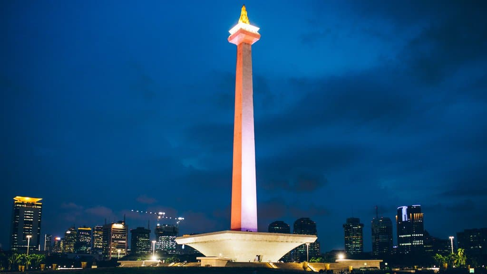

Tourist Spots

Monas
Monas is one of the most iconic Monument in Jakarta.

Kota Tua
Kota Tua, also known as Old Town, is a historical area in Jakarta.

Taman Mini
Taman Mini Indonesia Indah is a cultural park showcasing Indonesia's diversity.